Los menús aparecen así: . Los botones de cada pantalla, así: Registrar pago. Las teclas, así: N.
Abrí el navegador (Chrome, Firefox, Edge o Safari, en la computadora, la tablet o el celular) y entrá a la dirección del sistema. Escribí tu Usuario y Contraseña y tocá Ingresar.
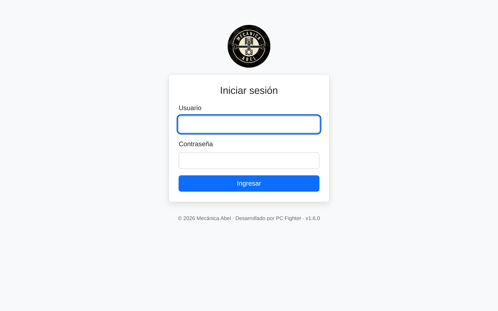
Con el sistema recién instalado, la pantalla de ingreso pide crear la cuenta del administrador: Nombre y apellido, Usuario y una contraseña. Después, el administrador da de alta al resto del personal (sección 16).
| Rol | Qué puede hacer |
|---|---|
| Empleado | El trabajo diario: recibir autos, clientes, vehículos, turnos, órdenes, pagos, stock, proveedores, servicios, combos, marcas y modelos. |
| Administrador | Todo lo anterior, más: configuración del sistema, usuarios, empleados, actualización de precios, reportes, auditoría, registro técnico, backups y anulación de pagos. |
Arriba a la derecha de todas las pantallas están:
| Botón | Para qué sirve |
|---|---|
| 👤 Tu nombre | Cambiar tu contraseña. |
| A− / A+ | Achicar o agrandar la letra de todo el sistema. Queda guardado en esa computadora o celular. |
| 🌙 Modo oscuro | Fondo oscuro, más cómodo de noche o con poca luz. Se vuelve con ☀️ Modo claro. |
| Salir | Cierra la sesión. Usalo siempre en computadoras compartidas. |
Al pie de cada pantalla figuran el nombre del taller y la versión del sistema (por ejemplo, v1.5.0), útil para consultas de soporte.
Tocá tu nombre arriba a la derecha, escribí la contraseña actual y la nueva dos veces, y tocá Actualizar contraseña.
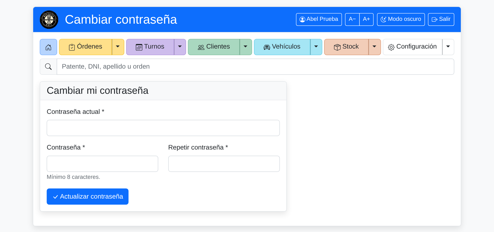
El sistema entiende los datos como los escribe cualquiera en el taller:
| Dato | Cómo se escribe |
|---|---|
| Importes | Con punto para los miles y coma para los centavos: 10.000 son diez mil y 1.234,50 es mil doscientos treinta y cuatro con cincuenta. Al salir del campo se acomoda solo (10.000 → 10.000,00). |
| Cantidades | Sin punto: 1250 son mil doscientos cincuenta; 1,5 es uno y medio. Si escribís «1.250», el sistema pregunta qué quisiste decir, para no descontar mil unidades del stock por error. |
| Teléfonos | Con el código de área, como te lo dicten: 011 15 2345-6789, 11 2345 6789 o +54 9 11…. El sistema saca el 0, el 15 y los espacios. Si falta el código de área, avisa. |
| Patentes | Con o sin espacios, en mayúsculas o minúsculas: ab 123 cd o ABC123. |
Arriba de todas las pantallas está el menú. Cada sección tiene su color, el mismo de la barra de título de sus pantallas, y la sección en la que estás queda subrayada. Cada botón es doble: tocando el nombre vas directo a la sección; tocando la flechita ▾ se abren las demás opciones (en la computadora también se abren pasando el mouse).
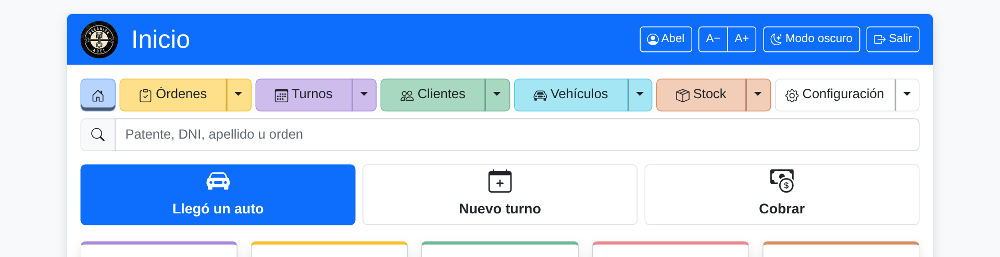
| Botón | Contiene |
|---|---|
| 🏠 Casita (azul) | Vuelve al inicio. |
| 📋 Órdenes (amarillo) | Llegó un auto, Ver órdenes y (administradores) Reportes. |
| 📅 Turnos (violeta) | Nuevo turno, Agenda semanal, Ver turnos. |
| 👥 Clientes (verde) | Nuevo cliente, Ver clientes, Deudores. |
| 🚗 Vehículos (celeste) | Nuevo vehículo, Ver vehículos. |
| 📦 Stock (terracota) | Repuestos, Proveedores y (administradores) Actualizar precios. |
| ⚙️ Configuración (gris) | Servicios, Combos, Marcas, Modelos. Para administradores, además: Sistema, Empleados, Usuarios, Auditoría y Registro del sistema. |
Es lo primero que se ve al ingresar. Arriba, tres botones grandes para lo de todos los días: Llegó un auto, Nuevo turno y Cobrar. Debajo, los números del taller; tocando cada uno vas al listado con el detalle:
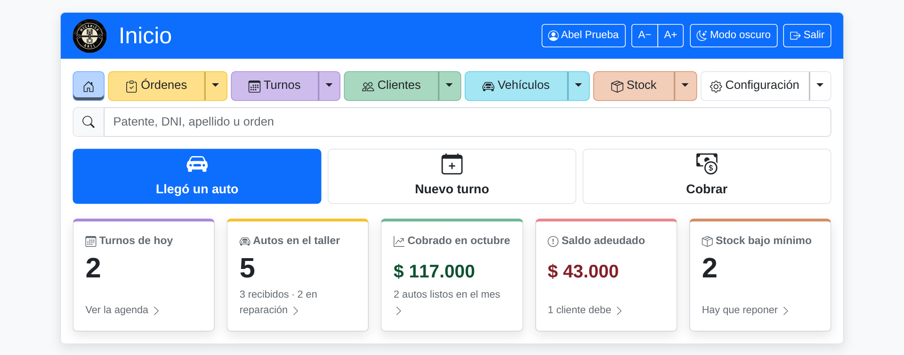
| Número | Qué muestra y adónde lleva |
|---|---|
| Turnos de hoy | Los turnos del día. Lleva a la agenda semanal. |
| Autos en el taller | Cuántos están recibidos y cuántos en reparación. Lleva a las órdenes abiertas. |
| Cobrado en el mes | Lo cobrado y cuántos autos quedaron listos. Lleva a los reportes. |
| Saldo adeudado | Lo que deben los clientes y cuántos son. Lleva a Deudores. |
| Stock bajo mínimo | Cuántos repuestos hay que reponer. Lleva a Repuestos. |
Si hay services por vencer en los próximos 30 días, aparecen debajo, con los clientes a los que les toca volver.
Debajo del menú está el buscador: escribí una patente, un DNI, un apellido o un número de orden. Mientras escribís aparecen sugerencias: tocá una (o elegila con las flechas ↑ ↓ y Enter) para ir directo a su ficha. Si apretás Enter sin elegir, ves todos los resultados agrupados.
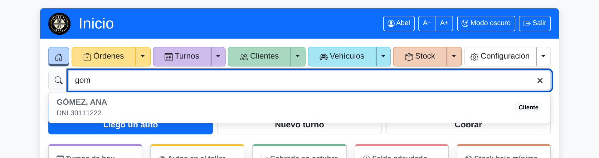
Todos los listados (clientes, vehículos, órdenes, turnos…) tienen un cuadro Filtrar esta lista, se ordenan tocando el título de cada columna y se muestran por páginas. Muchos tienen además un filtro de arriba (activos / inactivos, o el estado). Cuando un listado está vacío, ofrece el botón para cargar el primero.
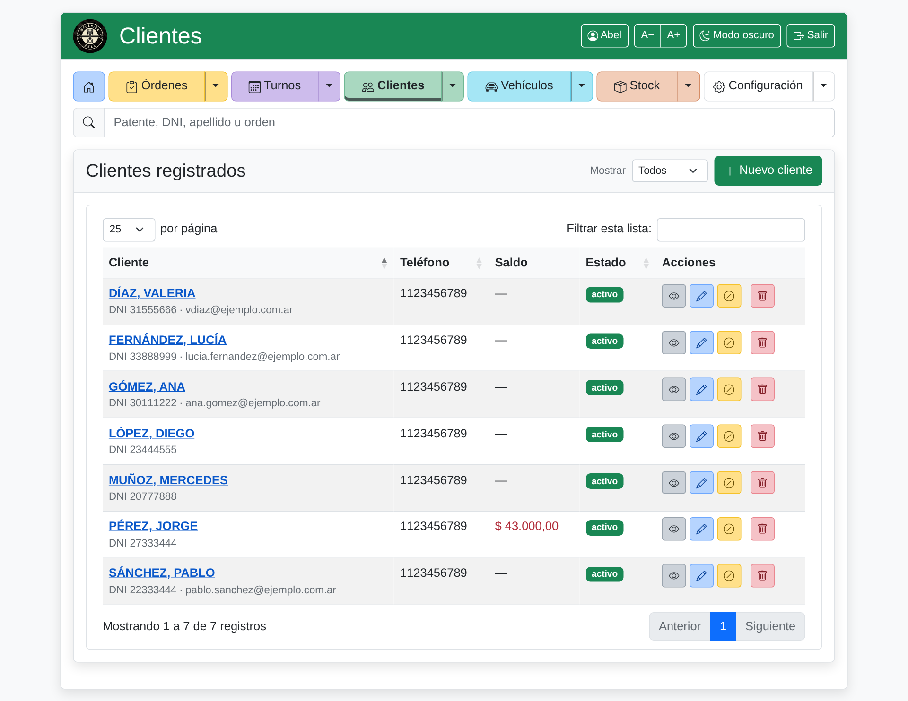
En el celular, el menú pasa a una barra abajo: Inicio, Órdenes, Llegó un auto (el botón redondo del medio), Turnos y Menú. En Menú están el resto de las secciones y, arriba, los botones de tu usuario, letra, modo oscuro y salir.
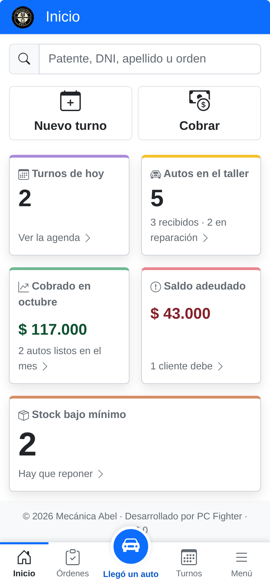
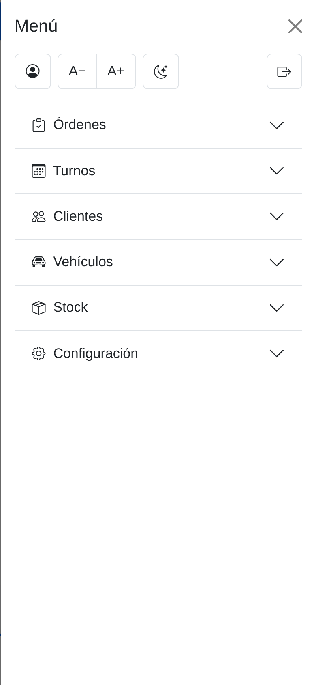
Inicio en el celular y el menú abierto.
El sistema se puede instalar como app en el celular o la computadora (el navegador ofrece «Instalar» o «Agregar a la pantalla de inicio»). Si te quedás sin conexión, avisa con un cartel.
En la computadora del mostrador, estas teclas ahorran tiempo (no funcionan mientras estás escribiendo en un campo):
| Tecla | Qué hace |
|---|---|
| / | Pone el cursor en el buscador. |
| N | Abre «Llegó un auto». |
| T | Abre «Nuevo turno». |
| O | Abre el listado de órdenes. |
| I | Vuelve al inicio. |
| ? | Muestra esta lista (también desde «Atajos de teclado», al pie de la pantalla). |
Lo que se puede revertir se hace al toque, sin preguntar «¿Seguro?», y aparece abajo a la derecha un aviso con el botón Deshacer durante 15 segundos. Pasa, por ejemplo, al desactivar un cliente o al empezar o cancelar una orden.
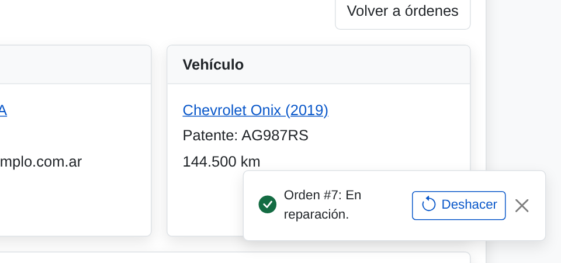
Lo que no se puede deshacer sigue preguntando antes, con botones que dicen qué va a pasar («Sí, eliminar» / «No, volver»): eliminar, anular un pago, terminar el trabajo (le avisa al cliente) o enviar un presupuesto.
En «Llegó un auto», las órdenes, los turnos, los clientes y los vehículos, lo que escribís se va guardando en esa computadora. Si se cierra la pestaña o se corta la luz, al volver a entrar aparece «Recuperamos lo que estabas cargando»; si no lo querés, tocá Descartar y empezar de cero.
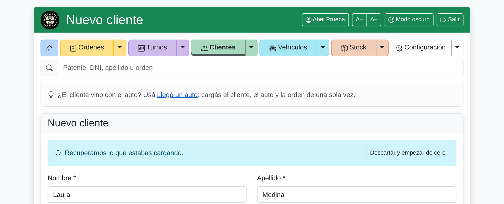
Ese borrador se borra solo al guardar el formulario, al salir del sistema o a las 8 horas.
Si al guardar falta algo o hay un dato mal escrito, el campo queda marcado en rojo con el motivo debajo (por ejemplo, «Este dato es obligatorio» o «Falta el código de área»). Corregilo y el aviso desaparece.
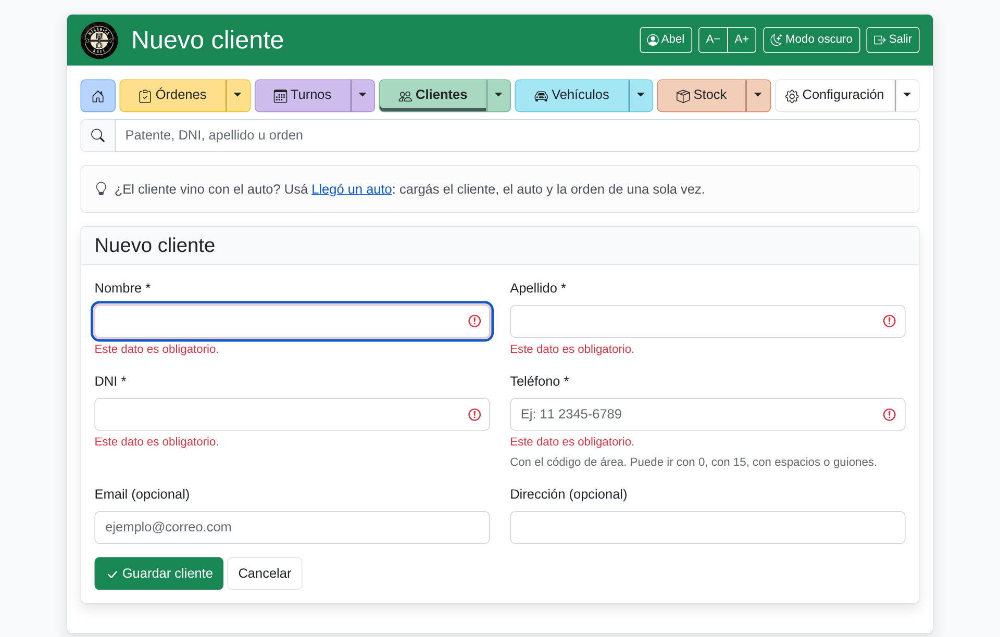
Es la forma de recibir un vehículo en el taller. En una sola pantalla cargás, si hace falta, el cliente y el auto, y queda abierta la orden. No hace falta saber todavía qué trabajos se van a hacer.
Se abre desde el botón grande del inicio, el botón del medio en el celular, o la tecla N.
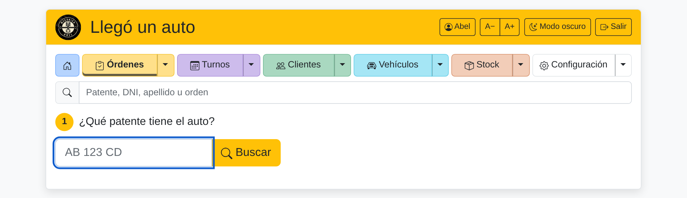
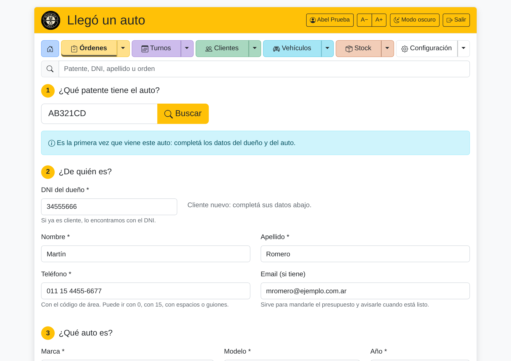
Si la patente ya está cargada, aparece «Ya lo conocemos» con el auto y su dueño, y se pasa directo a ¿Qué le pasa?: anotás el motivo y los km, y Recibir el auto.
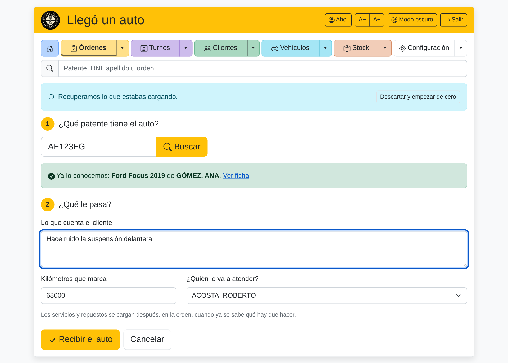
Si el auto ya tiene una orden abierta, el sistema lo avisa y el botón principal es Seguir con la orden #…. Si de verdad viene por otro trabajo, abajo está Abrir otra orden igual, que pide confirmación. Así no se duplican órdenes por error.
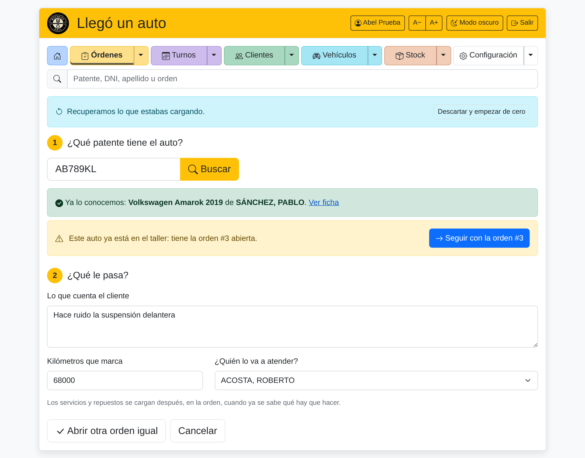
En el listado de turnos, cada turno del día tiene el botón Recibir: abre «Llegó un auto» con el auto y el motivo ya cargados, y al recibirlo el turno queda como Realizado.
Lo más común es cargar el cliente cuando llega con su auto (sección 3). También se puede cargar solo, por ejemplo para darle un turno por teléfono.
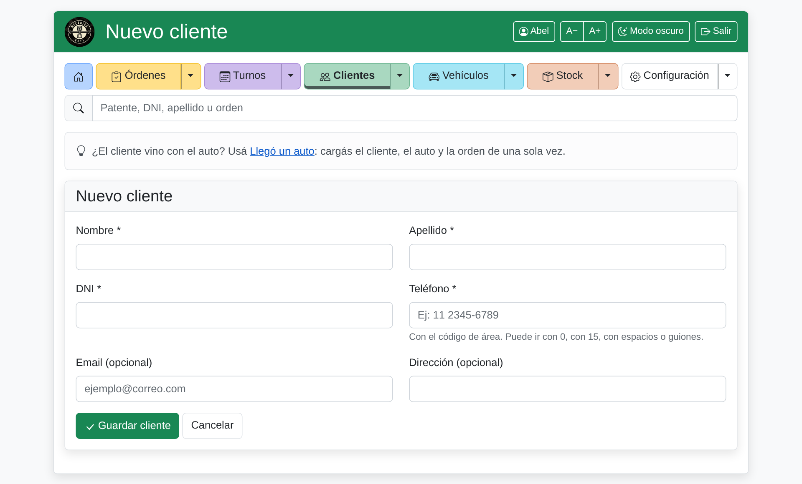
Desde el listado, tocá el nombre del cliente. En su ficha están sus datos (con Editar y acceso directo a WhatsApp), su estado de deuda, sus vehículos (con Nuevo vehículo), el historial de órdenes y el de turnos (con Nuevo turno). Cada fila del historial se toca entera para abrir la orden, y las que deben tienen el botón Cobrar. La foto del cliente es opcional: se agrega desde «Agregar una foto».
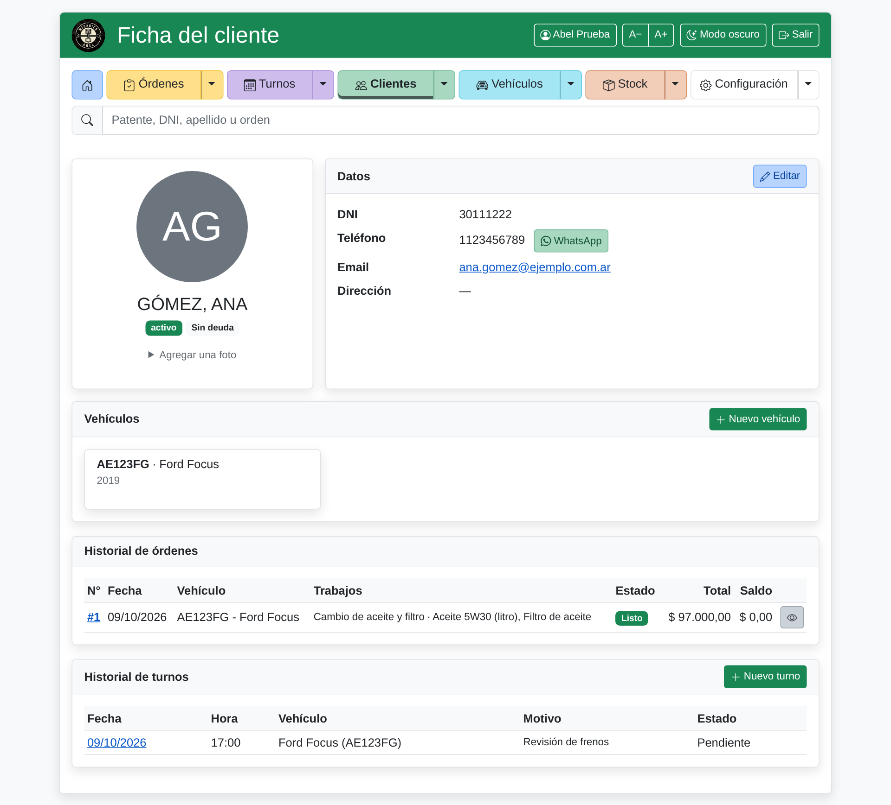
Un cliente sin vehículos ni turnos se puede eliminar. Si ya tiene historial no se borra: se desactiva (deja de aparecer al dar turnos y abrir órdenes, pero no se pierde nada). Al desactivarlo aparece Deshacer; también se puede volver a activar desde el listado, filtrando los inactivos. Si un cliente desactivado vuelve con un auto nuevo, al recibirlo se activa solo.
Lo habitual es cargarlo en «Llegó un auto». Para cargarlo aparte (por ejemplo, el segundo auto de un cliente), entrá a o, desde la ficha del cliente, Nuevo vehículo, que ya trae al cliente elegido.
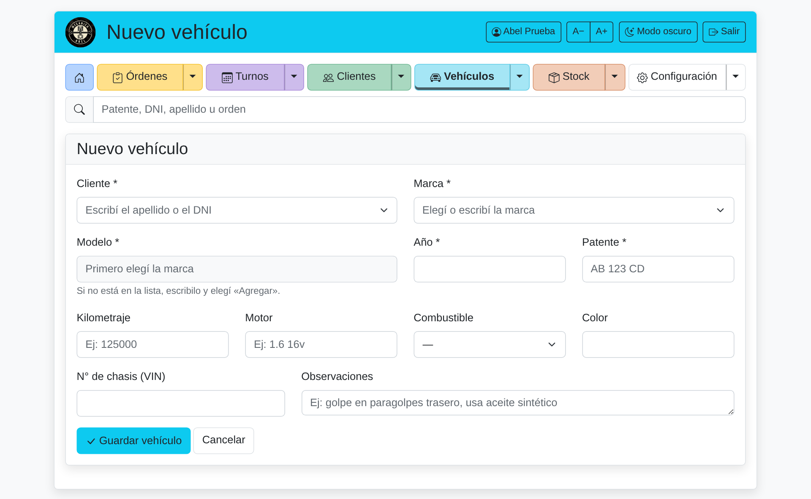
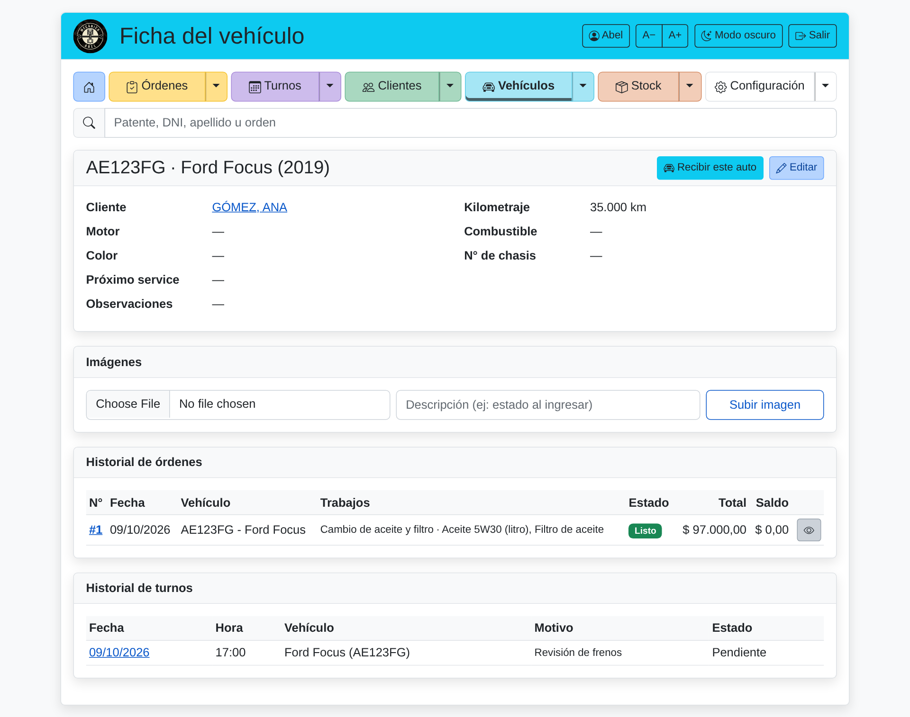
Los vehículos no se borran: se desactivan (por ejemplo, si el cliente lo vendió), con Deshacer por si fue un error.
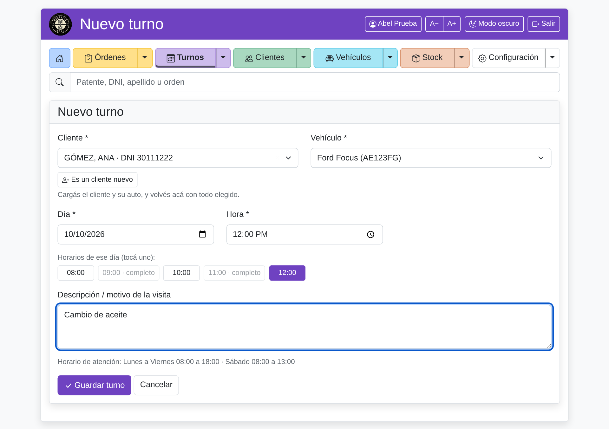
El sistema no deja agendar en fechas pasadas, fuera del horario de atención, en feriados ni cuando están ocupados todos los lugares de ese horario.
Si te llaman por teléfono y el cliente no está cargado, tocá Es un cliente nuevo en el formulario del turno. Son tres pasos guiados: cargás el cliente, después su auto, y volvés al turno con los dos ya elegidos.
| Estado | Significado |
|---|---|
| Pendiente | Agendado; el cliente todavía no confirmó. |
| Confirmado | El cliente confirmó que va (desde el email o porque lo marcaste vos). |
| Realizado | El cliente vino. Pasa solo a este estado al recibir el auto desde el turno. |
| Cancelado | Se canceló (por el taller o por el cliente). Libera el lugar. |
| No asistió | El cliente no vino. También libera el lugar. |
se filtra por Próximos, Pasados o Todos, y por estado. El estado se cambia desde el desplegable de cada fila. Cada turno tiene:
| Botón | Qué hace |
|---|---|
| Recibir | El cliente llegó: abre «Llegó un auto» con todo cargado. |
| 🔔 Recordar | Envía ahora el recordatorio por email (solo si el cliente tiene email). |
| ✉️ Pedir confirmación | Reenvía el email para confirmar o cancelar (solo si el cliente tiene email). |
| Abre WhatsApp con el recordatorio ya escrito; solo queda tocar «enviar». Es la opción para los clientes sin email. |
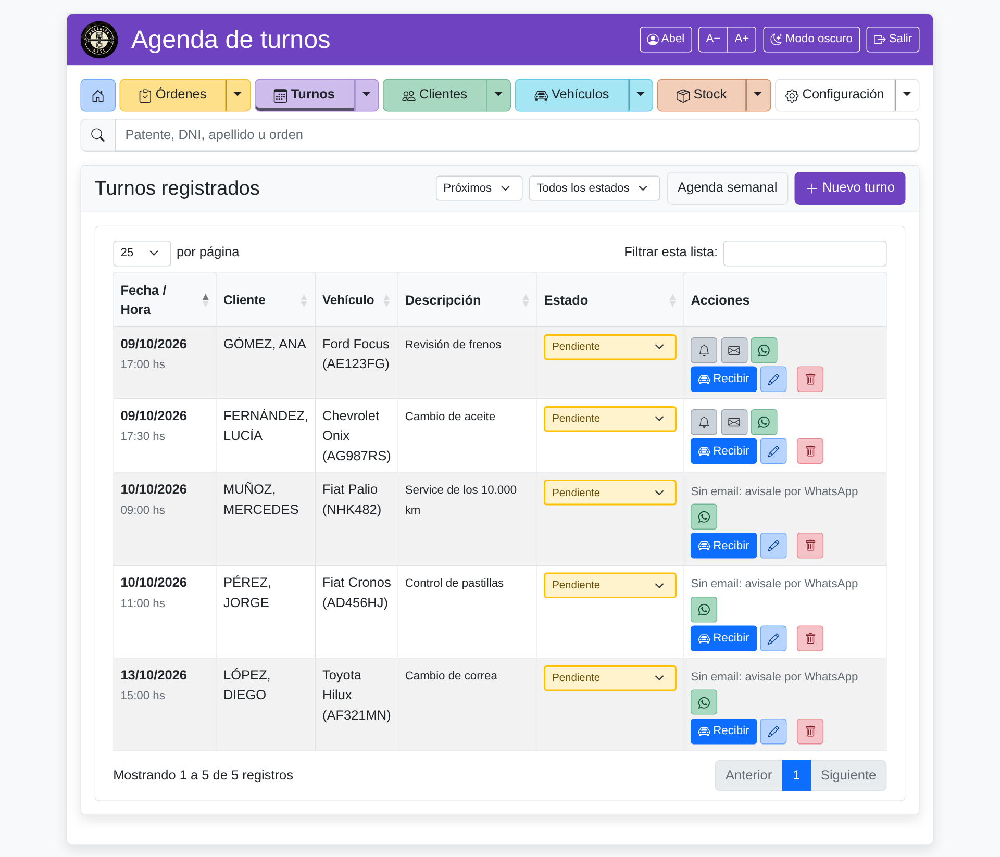
Si el cliente tiene email y está activado en la configuración, al agendar recibe un email para confirmar o cancelar (y de nuevo si se reprograma), y el día hábil anterior le llega un recordatorio automático. Si no tiene email, al guardar el turno aparece un aviso amarillo: el turno quedó guardado, solo que hay que avisarle por WhatsApp o por teléfono.
muestra la semana en una grilla por día y hora. El día de hoy aparece resaltado con la etiqueta «Hoy»; los feriados, marcados; los días que no se atiende, en gris. Tocá cualquier «+ libre» para agendar en ese horario. En el celular, la grilla arranca en el día de hoy y se desliza de costado.
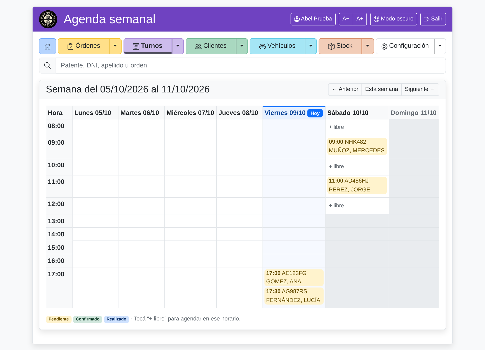
La orden es el centro del sistema: registra qué se le hace al auto, cuánto cuesta, quién lo hace y cuánto pagó el cliente. Pasa por tres etapas (los mismos nombres que ve el cliente en su consulta):
Además, una orden puede quedar Cancelada.
Arriba de cada orden se ve en qué etapa está y un recuadro Qué sigue con el botón del próximo paso:
| Situación | Botón principal |
|---|---|
| Recibida, sin trabajos cargados | Cargar trabajos y repuestos (y, si ya se empezó, Empezar el trabajo). |
| Recibida, con trabajos | Empezar el trabajo. Es el momento de mandarle el presupuesto al cliente. |
| En reparación | Terminar el trabajo. |
| Lista, con saldo | Cobrar y Comprobante de entrega. |
| Lista y pagada | Comprobante de entrega. |
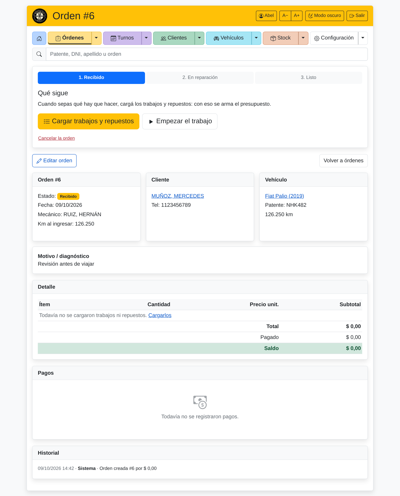
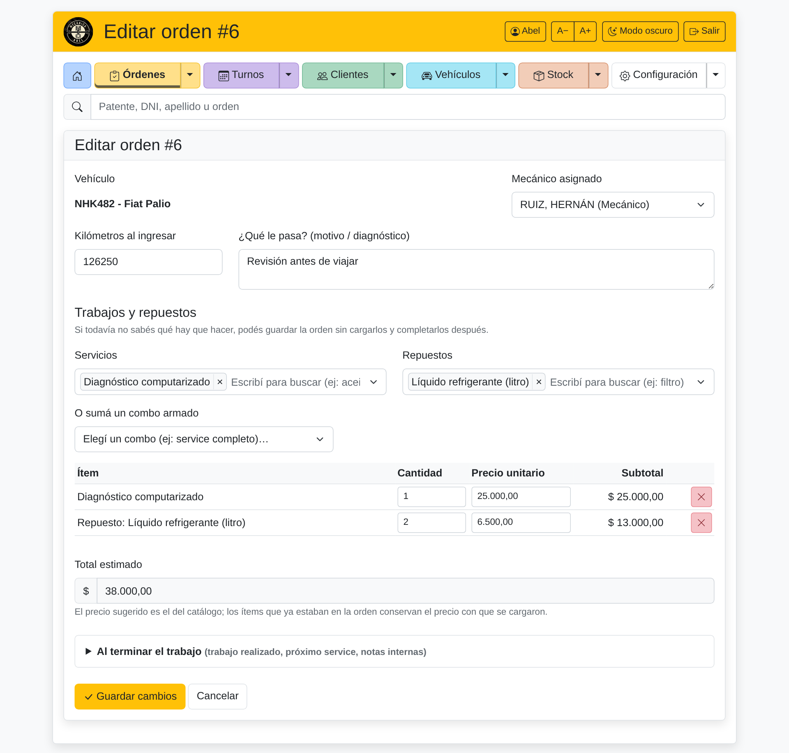
Más abajo, plegado en Al terminar el trabajo, están los campos que se completan al final:
| Campo | Para qué sirve |
|---|---|
| Trabajo realizado | Lo que efectivamente se hizo. Se imprime en el comprobante de entrega. |
| Próximo service (km / fecha) | Cuándo tiene que volver el cliente. El botón Sugerir completa los valores según la configuración, y el sistema le avisa al cliente cuando se acerca la fecha. |
| Notas internas | Comentarios para el equipo. No se imprimen ni las ve el cliente. |
Empezar el trabajo pasa la orden a En reparación al toque, con Deshacer por si fue sin querer.
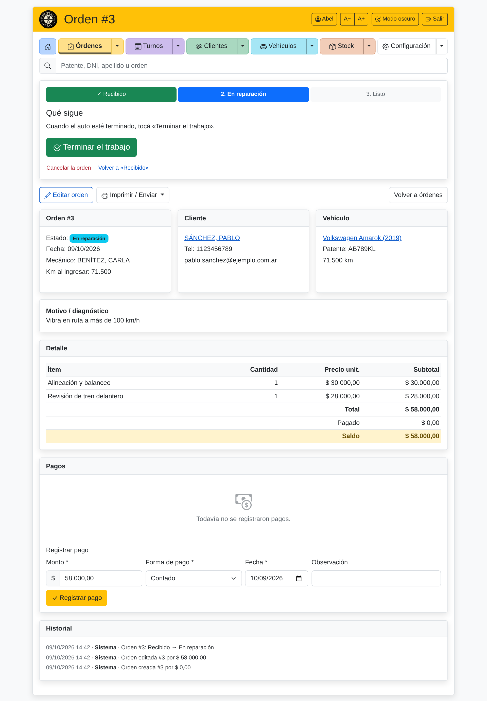
Terminar el trabajo pregunta antes de hacerlo, porque tiene efectos afuera del sistema, y te dice cuáles:
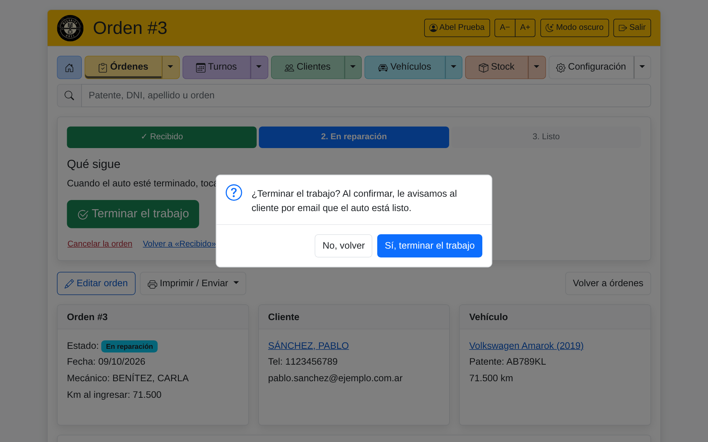
Debajo del recuadro «Qué sigue» están las opciones menos comunes: Cancelar la orden, Volver a «Recibido» y, en una orden lista, Volver a abrir el trabajo (los repuestos vuelven al stock hasta que se termine de nuevo). Una orden cancelada se puede volver a abrir.
(o la tecla O) muestra todas las órdenes; arriba se filtran por estado, por ejemplo Autos en el taller o Con saldo sin cobrar. Tocá el número para abrir la orden. El estado también se puede cambiar desde el desplegable de cada fila.
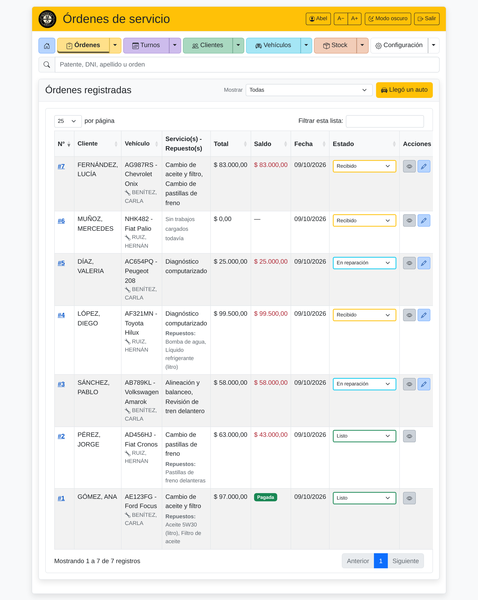
En el celular, debajo del número de cada orden se ve la patente, y la ficha muestra el mismo «Qué sigue» con botones grandes.
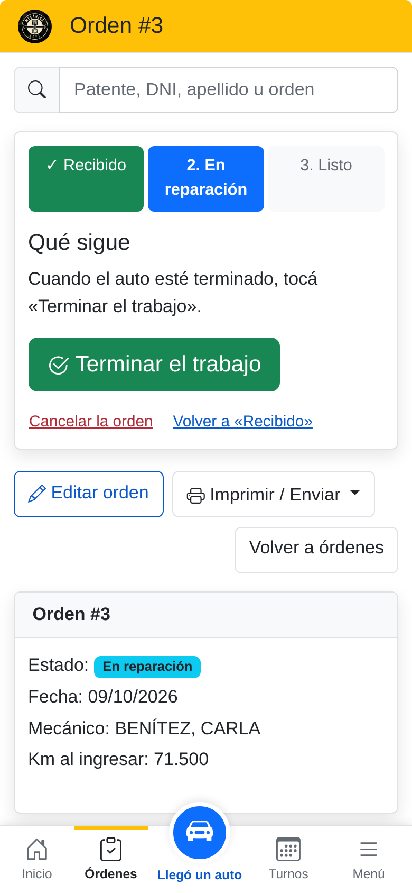
En la ficha de la orden, el botón Imprimir / Enviar reúne todo:
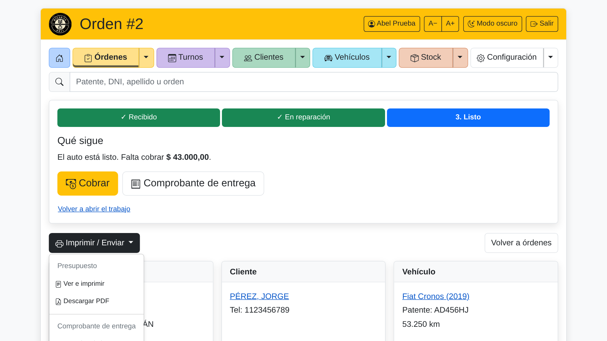
| Opción | Qué hace |
|---|---|
| Presupuesto › Ver e imprimir | El presupuesto listo para imprimir, con los datos del taller, cliente, vehículo, ítems, validez, formas de pago y observaciones. |
| Presupuesto › Descargar PDF | El mismo presupuesto en PDF, para guardarlo o mandarlo. |
| Mandar por email al cliente | Le llega un email con un link para ver el presupuesto y aceptarlo o rechazarlo online. Si el cliente no tiene email, en su lugar aparece «Cargarle el email al cliente». |
| Escribirle por WhatsApp | Abre WhatsApp con un mensaje para el cliente; adjuntale el PDF. |
| Comprobante de entrega | Solo en órdenes listas: el comprobante para entregar el auto, con el trabajo realizado, lo pagado, el saldo, el próximo service y la garantía (para imprimir o en PDF). |
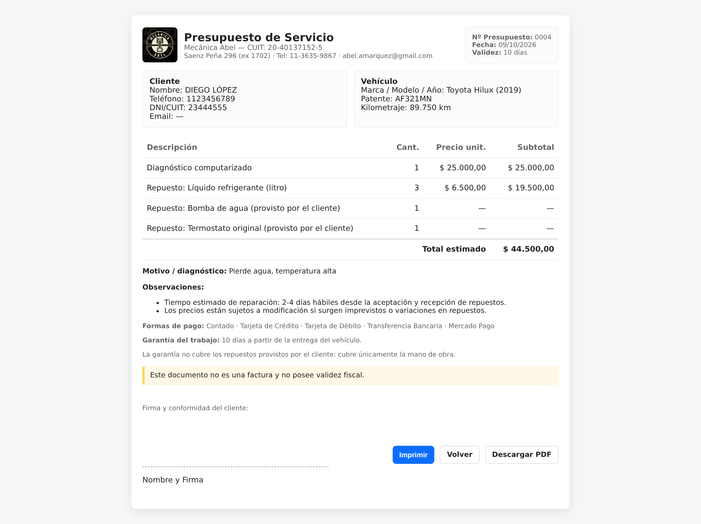
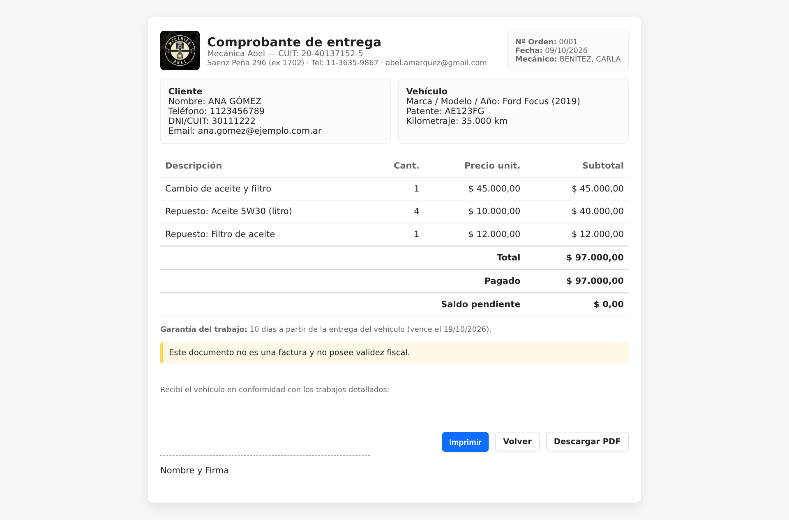
Cuando el cliente responde desde el link, la orden lo muestra: «Presupuesto aceptado por el cliente» o «Presupuesto rechazado» (con la fecha); si no contestó, «Presupuesto enviado el …, sin respuesta».
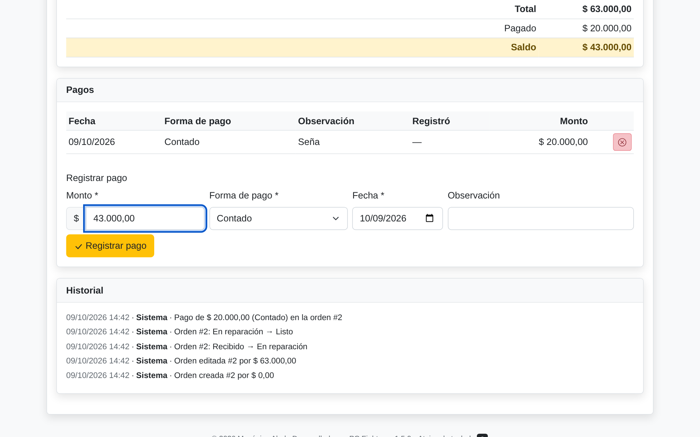
Se aceptan pagos parciales (una seña al empezar y el resto al retirar). Un pago no puede superar el saldo: si te pasás, el sistema avisa «No podés cobrar más que el saldo». Cada pago queda registrado con quién lo cargó.
(o el número «Saldo adeudado» del inicio, o el botón Cobrar) lista los clientes con saldo pendiente: el total adeudado, cuántas órdenes deben y el saldo de cada uno. El botón Cobrar de cada fila abre directo la orden impaga más vieja de ese cliente, lista para registrar el pago.
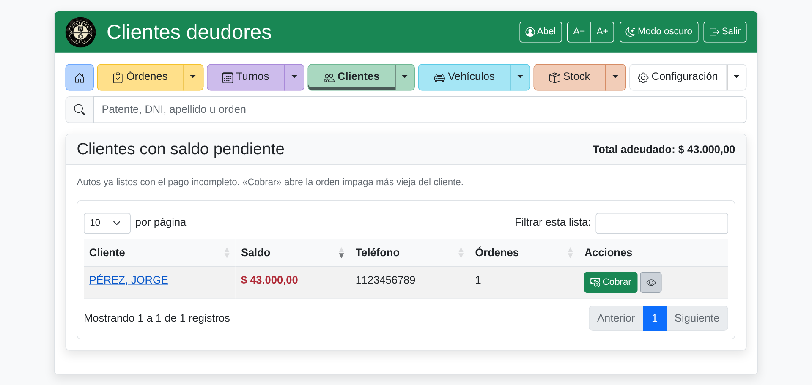
Se consideran deudas las órdenes listas que no se terminaron de pagar; las que todavía están en el taller no cuentan.
Están en y los puede manejar cualquier usuario.
Los trabajos que ofrece el taller (cambio de aceite, alineación, diagnóstico…), con Nombre, Precio base y Descripción. El precio base es el que se sugiere al cargar una orden.
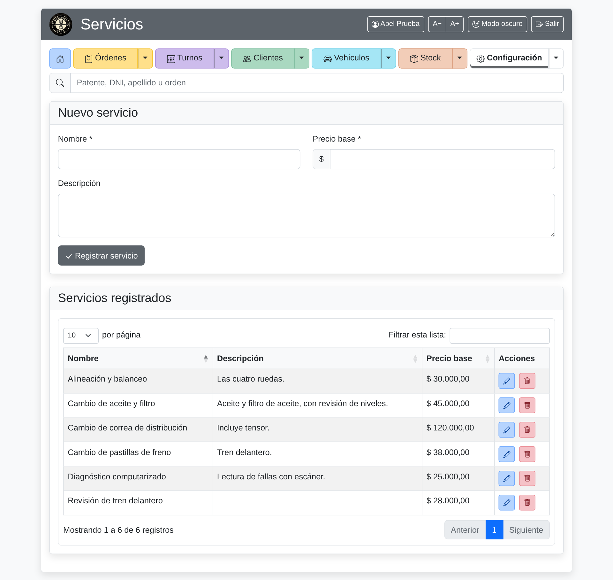
Un combo agrupa servicios y repuestos que suelen ir juntos (por ejemplo, «Service 10.000 km» = cambio de aceite + filtro de aceite + filtro de aire + 4 litros de aceite). Al armarlo elegís los ítems y sus cantidades, y ves el total a precios actuales. Con Combo activo decidís si aparece al cargar órdenes.
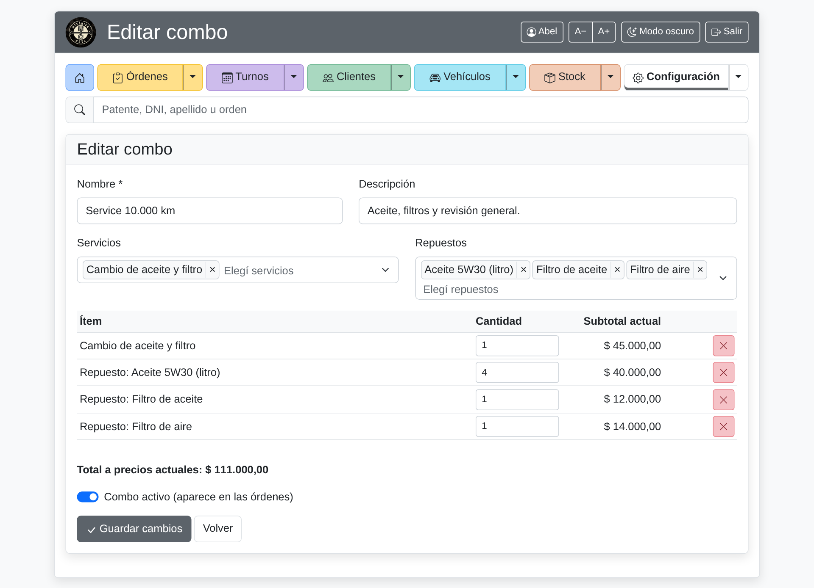
Se usan al cargar vehículos. Se pueden cargar acá o, más rápido, escribiéndolos al recibir el auto (sección 3): si no están, se agregan solos.
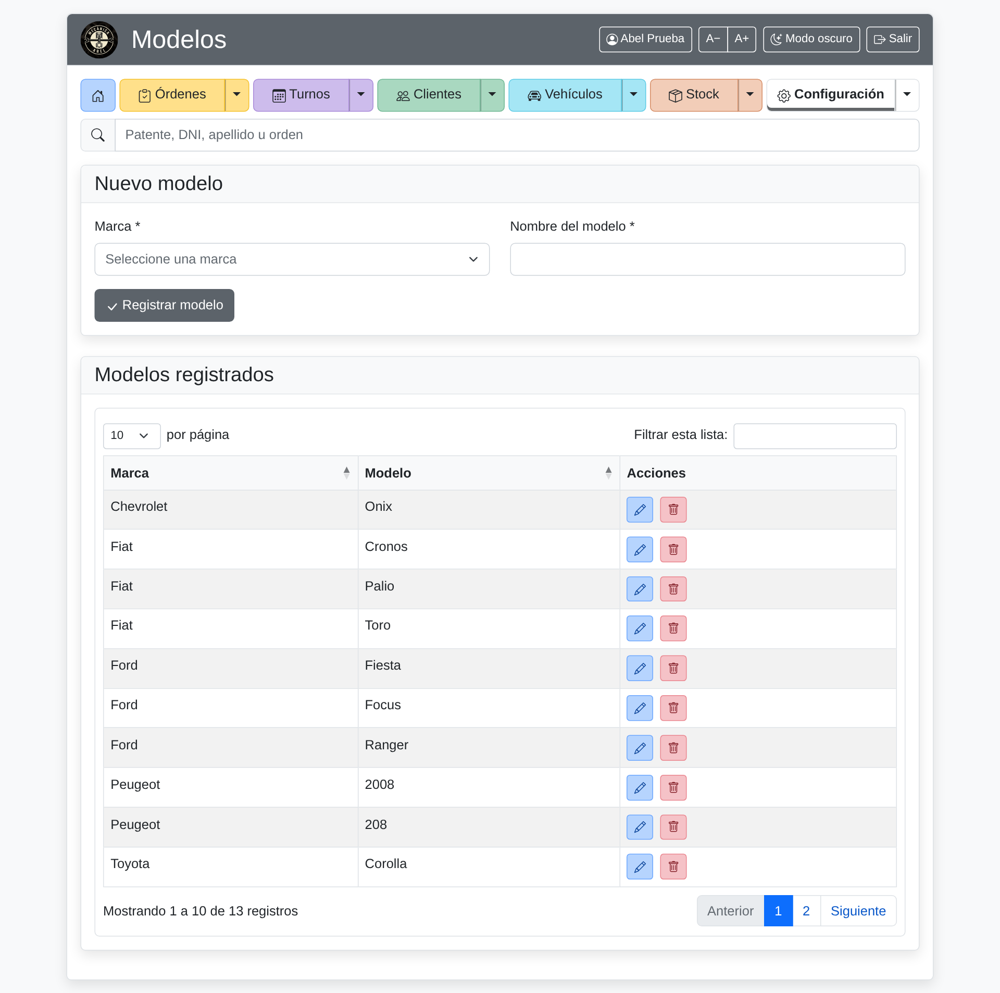
En se cargan los repuestos con Código, Nombre, Costo, Precio de venta, Proveedor habitual, Stock mínimo y Descripción. Al escribir el costo, el botón Sugerir calcula el precio de venta con el margen configurado, y se muestra el margen resultante. El listado resalta los que están en el mínimo o por debajo.
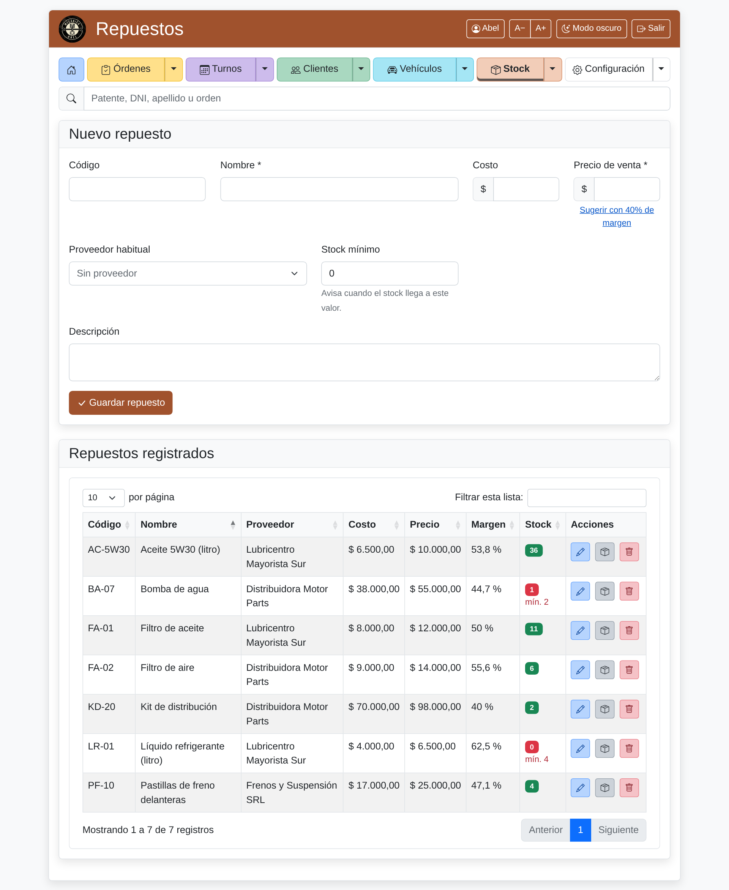
Tocá el botón de stock de un repuesto para ver su stock actual y su historial. Desde ahí:
| Acción | Cuándo usarla |
|---|---|
| Registrar ingreso | Cuando llega mercadería: Cantidad, Proveedor, Costo unitario (debajo se ve el último costo) y el comprobante (por ejemplo, «Factura A 0001-00001234»). El stock sube. Si tildás «Actualizar el precio de venta», se recalcula con el margen configurado. |
| Ajustar por conteo | Plegado más abajo: cuando contás los repuestos en el estante y no coincide con el sistema. El número que cargás reemplaza el stock actual (pide confirmación). |
| Descuento por orden | Automático al terminar una orden; no hay que hacer nada. |
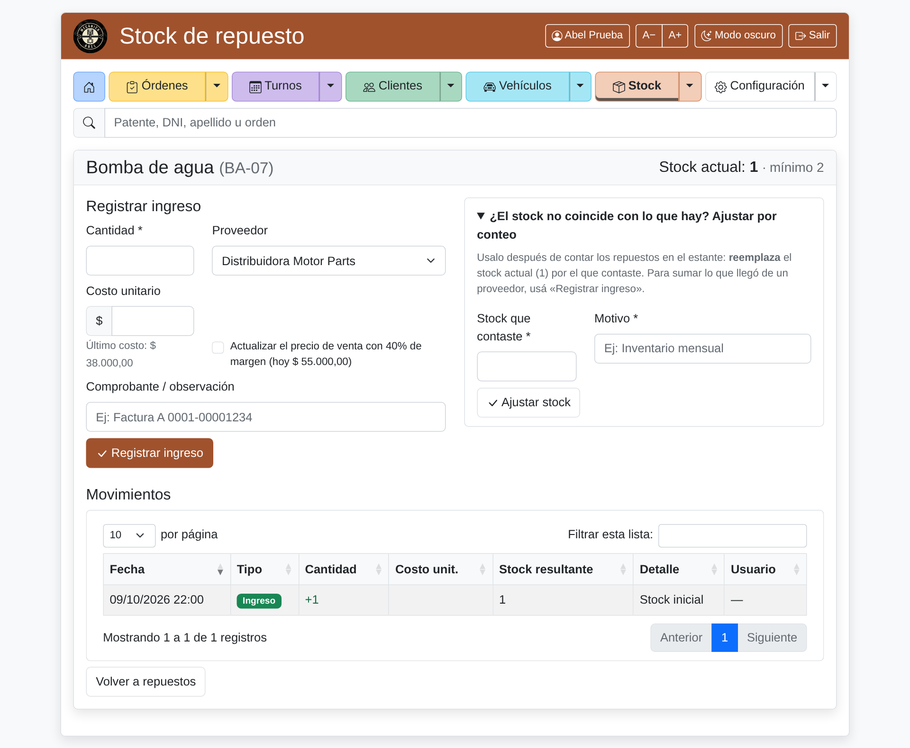
En : Nombre o razón social, CUIT, Persona de contacto, Teléfono, Email, Dirección, Observaciones y si está activo.
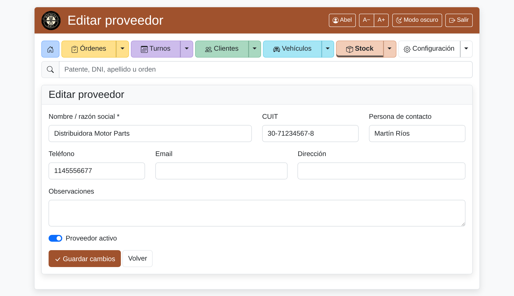
Sirve para subir (o bajar) muchos precios de una vez, por ejemplo cuando hay inflación o un proveedor actualiza su lista.
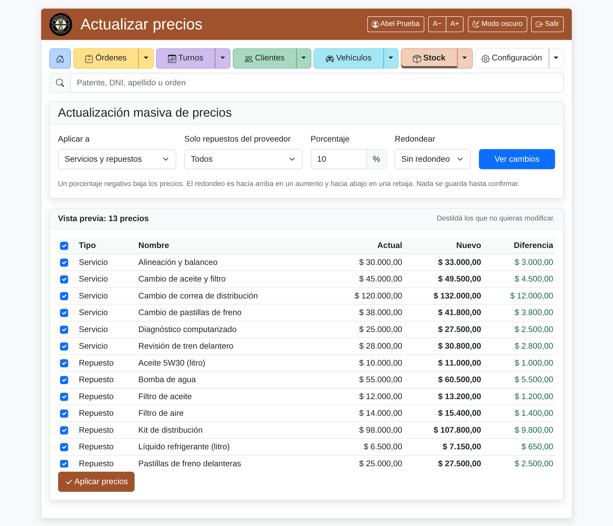
Elegí el período con Desde y Hasta y tocá Ver. Reportes disponibles:
Cada reporte se descarga con Excel (CSV). Las órdenes se cuentan por su fecha de creación y los pagos por su fecha de cobro; las canceladas no se incluyen.
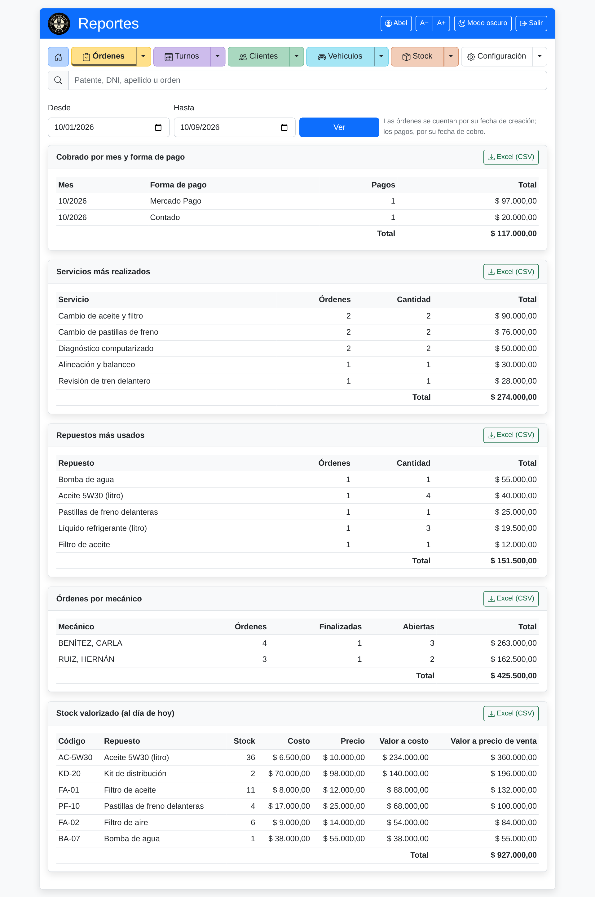
El cliente no necesita usuario ni contraseña. Se comunica con el taller por tres caminos.
En la dirección del sistema seguida de /seguimiento, el cliente escribe su DNI y la patente, y ve sus próximos turnos y sus trabajos: cada orden con su avance (Recibido → En reparación → Listo, los mismos nombres que usa el taller) y, si está habilitado, el total y el saldo.
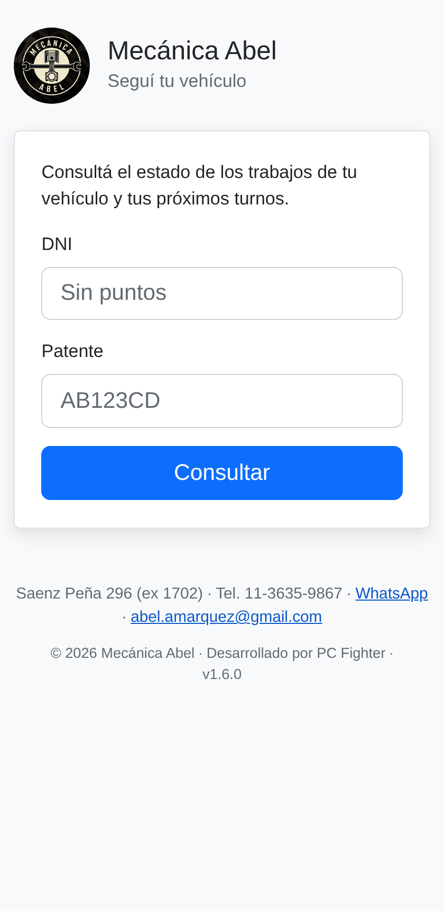
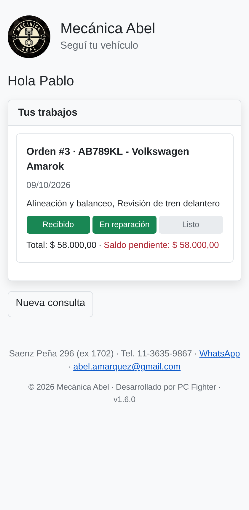
Consulta con DNI y patente, y lo que ve el cliente.
Por seguridad, el portal no muestra datos de contacto, da el mismo mensaje si el DNI no existe o la patente no coincide, y se bloquea 15 minutos tras 10 consultas fallidas.
El cliente ve los datos del turno y dos botones: Confirmo que voy o Cancelar turno. Lo que elija se refleja al instante en la agenda.
El cliente ve el detalle del presupuesto, puede descargarlo en PDF y tocar Acepto el presupuesto o No lo acepto. Desde ese mismo link puede seguir el avance del trabajo.
| Pestaña | Qué se configura |
|---|---|
| Taller | Nombre, CUIT, dirección, teléfono, WhatsApp y email. Aparecen en presupuestos, comprobantes, emails y al pie del sistema. |
| Presupuestos | Validez del presupuesto y días de garantía; formas de pago (una por línea: son las que se ofrecen al cobrar); observaciones y leyenda del presupuesto; si al aceptar el presupuesto la orden pasa sola a En reparación. |
| Turnos y horario | Horario de atención por día; no permitir turnos fuera de horario ni en feriados; turnos simultáneos por horario; franjas de la agenda (minutos); feriados (con el botón para importar los nacionales); pedir confirmación al agendar; recordatorio automático. |
| Service preventivo | Intervalo sugerido en km y meses para el próximo service; aviso automático al cliente y con cuántos días de anticipación. |
| Avisos | Canales para avisar a los clientes (email; WhatsApp Business próximamente); avisar al taller cuando un cliente responde un presupuesto; avisar al cliente cuando el auto está listo; botón de WhatsApp manual. Abajo, los últimos avisos enviados con su resultado. |
| Mensajes | Los textos de los emails y mensajes a clientes, con variables (nombre, fecha, saldo…) que el sistema completa solo. |
| Stock | Permitir terminar órdenes aunque el stock quede negativo; margen sugerido sobre el costo. |
| Portal de clientes | Habilitar el portal; pedir la patente además del DNI (recomendado); mostrar totales y saldos; cantidad de trabajos a mostrar. |
| Backups | Ver sección 17. |
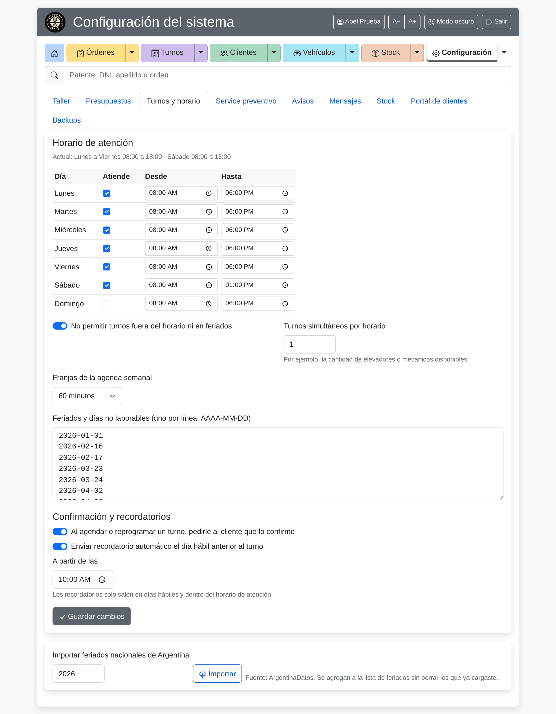
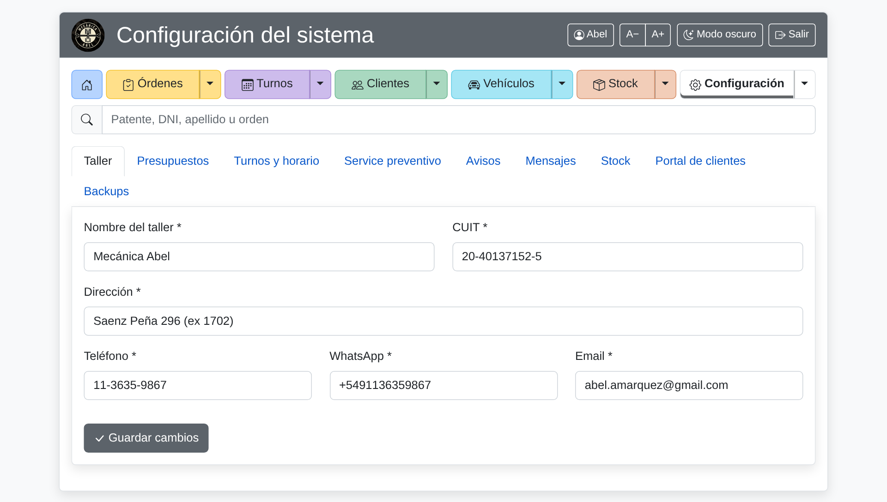
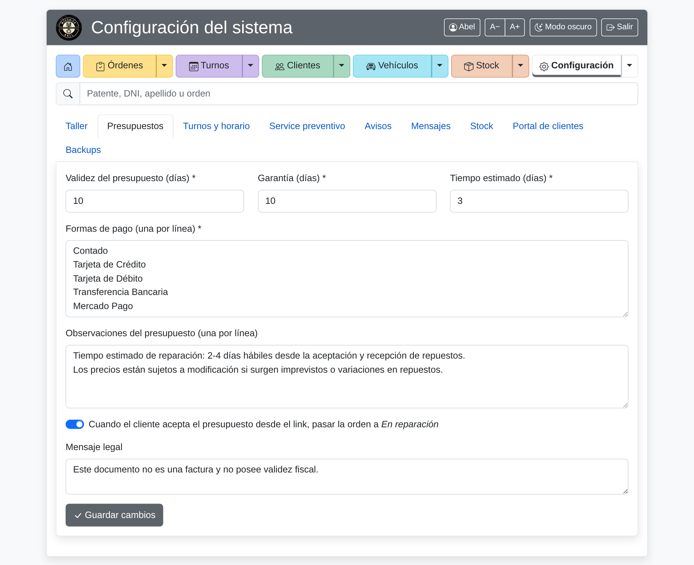
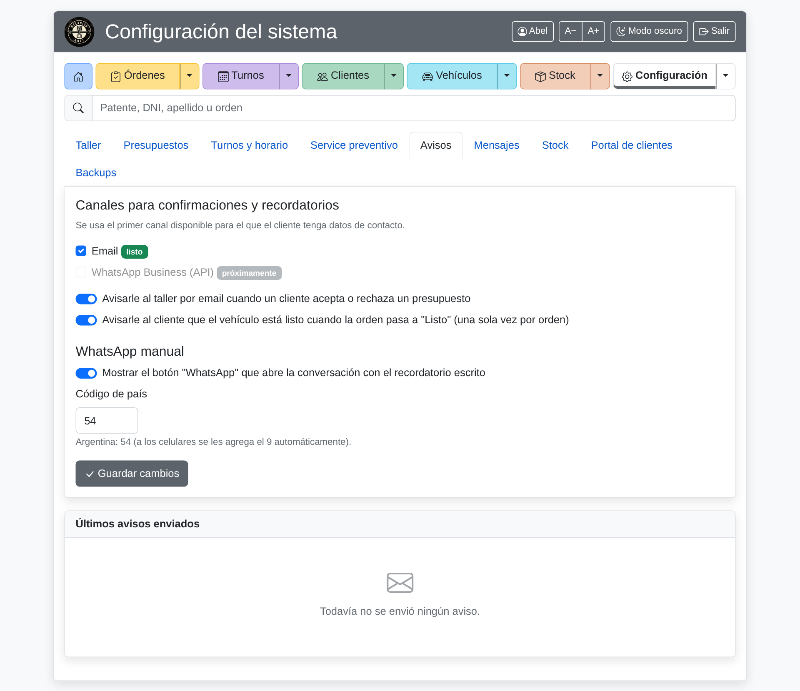
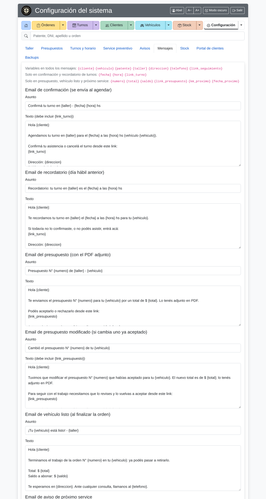
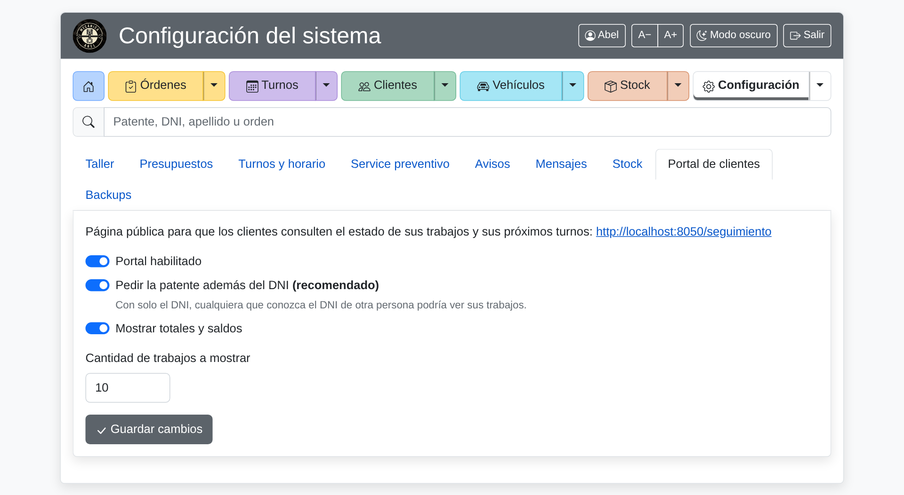
Son las personas que entran al sistema. En se ve la lista con su rol, estado y último acceso. Con Nuevo usuario se carga Nombre y apellido, Usuario, Rol (empleado o administrador) y contraseña. Con Usuario activo se habilita o bloquea su ingreso.
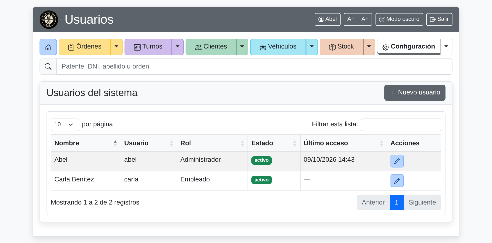
Son el personal del taller (mecánicos, etc.), tengan o no usuario. En se carga Nombre, Apellido, DNI, Puesto, Teléfono, Fecha de ingreso y Email. Los empleados activos aparecen como mecánico en «Llegó un auto», en las órdenes y en el reporte por mecánico. Darlos de baja se hace al toque, con Deshacer.
responde quién hizo qué y cuándo: cambios de estado, pagos, movimientos de stock, cambios de precios, configuración e ingresos al sistema, con el usuario y la IP. Se filtra por tipo, usuario y fechas.
es un registro técnico (errores y eventos internos), útil para el soporte: si aparece una pantalla de error, anotá el código que figura en ella y pasáselo a quien da soporte, junto con la versión que figura al pie.
El sistema hace una copia de seguridad automática todos los días de la base de datos y de las imágenes. En se configura a partir de qué hora y cuántas copias conservar; también se puede Generar backup ahora y descargar cualquiera de los disponibles.
| Pregunta | Respuesta |
|---|---|
| Cargué un monto y quedó mal. | Los importes van con punto para los miles: 10.000 son diez mil. Si un pago quedó mal, un administrador puede anularlo y lo volvés a cargar. |
| Me equivoqué al desactivar o al empezar una orden. | Tocá Deshacer en el aviso de abajo a la derecha (dura 15 segundos). Si ya pasó, hacé la acción contraria: activar, o «Volver a Recibido». |
| No puedo agendar un turno en cierto horario. | Puede ser fuera del horario de atención, un feriado, una fecha pasada o que ya estén ocupados todos los lugares. Los horarios para tocar muestran solo los disponibles. |
| No puedo terminar una orden. | Puede faltar cargar los trabajos y repuestos, o algún repuesto no tiene stock suficiente: registrá el ingreso o pedile a un administrador que permita stock negativo. |
| No puedo editar una orden. | Solo se editan órdenes Recibidas o En reparación. Si está lista, usá «Volver a abrir el trabajo» (el stock se repone), editala y terminala de nuevo. |
| Quise recibir un auto y me dice que ya está en el taller. | Ya tiene una orden abierta: tocá Seguir con la orden. Si es otro trabajo, usá Abrir otra orden igual. |
| No aparece la opción de mandar el presupuesto por email. | El cliente no tiene email. Tocá «Cargarle el email al cliente», o descargá el PDF y mandalo por WhatsApp. |
| El cliente no recibió el email. | Que revise la carpeta de spam, y verificá que el email esté bien escrito. Un administrador puede ver en Configuración › Sistema › Avisos si el envío salió o falló. |
| Se cortó la luz mientras cargaba algo. | Volvé a la misma pantalla: aparece «Recuperamos lo que estabas cargando». |
| No puedo borrar un servicio, repuesto o cliente. | Está en uso. Para no perder el historial no se borra; a clientes y vehículos se los desactiva. |
| Me equivoqué en el DNI de un cliente. | El DNI no se puede modificar. Consultá con un administrador. |
| La letra es muy chica (o muy grande). | Usá los botones A− y A+ de arriba a la derecha (en el celular, dentro de Menú). |
| Me bloqueó el ingreso. | Tras 5 intentos fallidos hay que esperar 15 minutos. Si no recordás la contraseña, pedile a un administrador una nueva. |
| Aparece una pantalla de error. | Anotá el código que figura, qué estabas haciendo y la versión del pie de página, y pasáselo a quien da soporte técnico. |